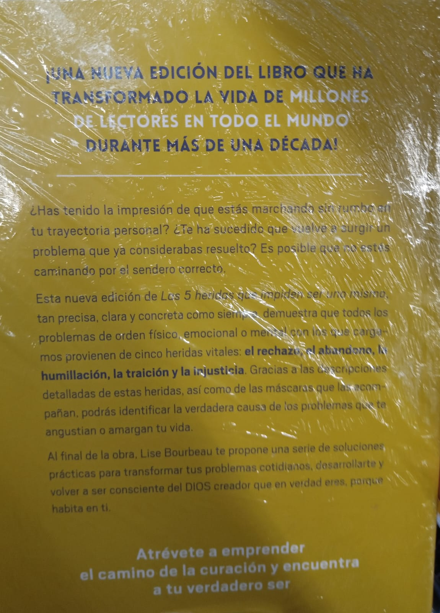
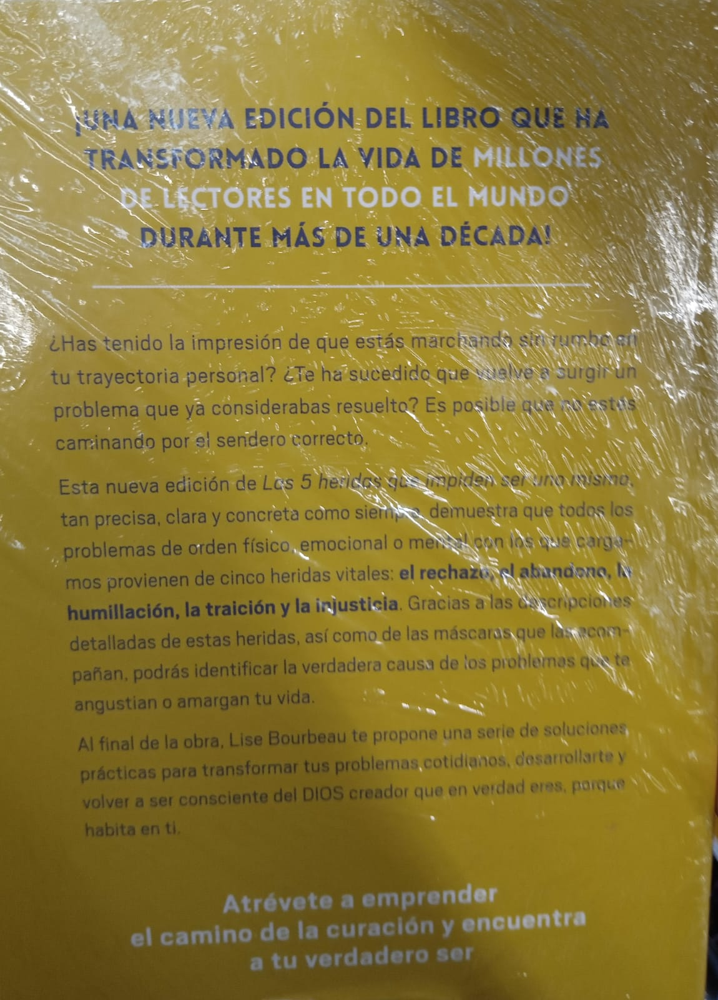

Las 5 heridas que impiden ser uno mismo | Lice Bourbeau
$348.00
¿Has tenido la impresión de que estás marchando sin rumbo en tu trayectoria personal? ¿Te ha sucedido que vuelve a surgir un problema que ya considerabas resuelto? Es posible que no estés caminando por el sendero correcto. Esta nueva edición de Las 5 heridas que impiden ser uno mismo, tan precisa, clara y concreta como siempre, demuestra que todos los problemas de orden físico, emocional o mental con los que cargamos provienen de cinco heridas vitales: el rechazo, el abandono, la humillación, la traición y la injusticia. Gracias a las descripciones detalladas de estas heridas, así como de las máscaras que las acompañan, podrás identificar la verdadera causa de los problemas que te angustian o amargan tu vida. Al final de la obra, Lise Bourbeau te propone una serie de soluciones prácticas para transformar tus problemas cotidianos, desarrollarte y volver a ser consciente del DIOS creador que en verdad eres, porque habita en ti. Atrévete a emprender el camino de la curación y encuentra tu verdadero ser.